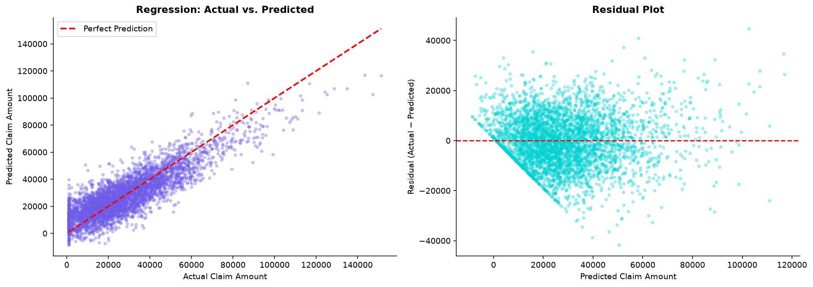
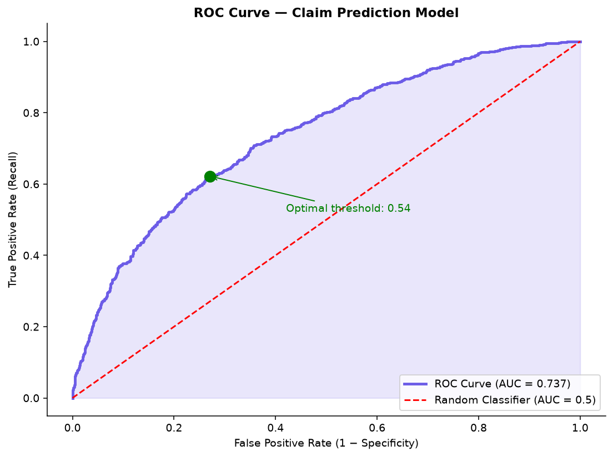
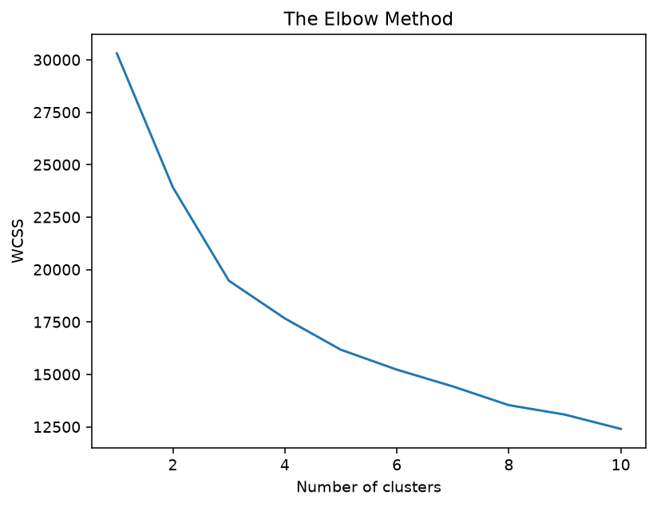
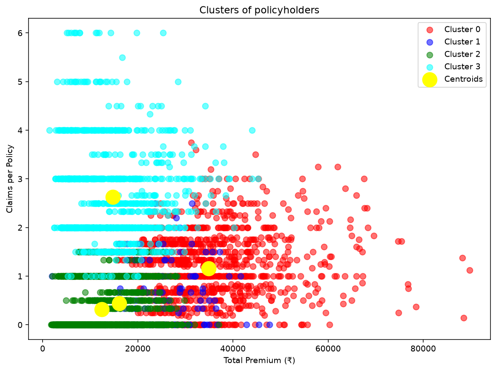

Session 11: AI & Machine Learning Fundamentals
Learning Objectives
- Map how machine learning creates value across the insurance value chain — underwriting, pricing, claims, fraud, retention, and marketing
- Distinguish between supervised learning (regression and classification) and unsupervised learning (clustering), and identify when each is appropriate for insurance problems
- Apply the Scikit-learn API pattern — import, instantiate, fit, predict, evaluate — consistently across all model types
- Build and evaluate a linear regression model to predict claim amounts (RMSE, R²) and a logistic regression model to predict claim probability (accuracy, precision, recall, confusion matrix, ROC-AUC)
- Apply K-means clustering to segment policyholders into risk groups and profile each cluster with business insights
1. Machine Learning in Insurance — The Big Picture
Machine learning is not a magic wand. It is a set of statistical and computational techniques that find patterns in data and use those patterns to make predictions or decisions. In insurance, ML is valuable because the industry has exactly the characteristics that ML thrives on: large datasets, well-defined prediction problems, clear feedback loops, and significant financial impact from even small improvements in prediction accuracy.
1.1 Where ML Creates Value in Insurance
| Insurance Function | ML Application | Prediction Problem | Impact of Improvement |
|---|---|---|---|
| Underwriting | Risk scoring, automated decision-making | Predict claim probability and expected loss for each applicant | Better risk selection = 5–15% loss ratio improvement |
| Pricing | Elasticity modeling, dynamic pricing | Predict willingness-to-pay and price sensitivity at individual level | 2–8% revenue uplift from optimized pricing |
| Claims | Severity prediction, triage, STP | Predict ultimate claim size, complexity, and optimal routing | 5–10% claims leakage reduction |
| Fraud Detection | Anomaly detection, fraud classification | Predict probability that a claim is fraudulent | 10–25% improvement in fraud detection rate |
| Customer Retention | Churn prediction, next-best-action | Predict probability that a policyholder will lapse | 10–30% reduction in preventable churn |
| Marketing | Customer segmentation, lead scoring | Predict which customers are most likely to buy | 20–40% improvement in marketing ROI |
The impact ranges in the right-hand column are illustrative industry benchmarks drawn from McKinsey's AI-in-insurance research [4]; individual results depend heavily on data quality, product line, and implementation maturity.
1.2 The Insurance ML Maturity Curve
Most Indian insurers are at different stages of ML maturity. Understanding where an organisation sits on this curve is important for both internal strategy (what to invest in) and external analysis (what is a competitor capable of?):
- Level 0 — Descriptive (30% of insurers): Reports on what happened. SQL queries and dashboards. No predictive capability.
Typical examples: smaller regional and cooperative insurers, and a few smaller private general insurers that still rely on basic MIS reports rather than analytics teams. (Small players are hard to name individually — this tier is defined by limited data infrastructure, not by brand.) - Level 1 — Diagnostic (40% of insurers): Why did it happen? Online Analytical Processing (OLAP), basic segmentation, root-cause analysis with simple Excel models. Most public and mid-size private Indian insurers are here.
Typical examples: the public-sector giants — LIC (life) and the four PSU general insurers (New India Assurance, National Insurance, United India Insurance, Oriental Insurance) — plus several mid-size private players. They have large data warehouses and Excel/OLAP-driven MIS, but predictive models are still point projects rather than embedded systems. - Level 2 — Predictive (20% of insurers): What will happen? ML models deployed for specific use cases — fraud detection, churn prediction, claims severity. Large private insurers and digital carriers.
Typical examples: HDFC Ergo, Bajaj Allianz, SBI General, HDFC Life, Max Life — large private insurers running production fraud, churn, and claims-severity models in specific lines; and digital carriers like Digit (automated claims triage). - Level 3 — Prescriptive (8% of insurers): What should we do about it? ML models integrated into decision systems — automated underwriting, dynamic pricing, next-best-action for agents. Leading-edge private insurers.
Typical examples: ICICI Lombard (AI-driven motor claims and the IL TakeCare app — models now steer underwriting and claims decisions), Max Life / HDFC Life (agent next-best-action and predictive underwriting in term plans), and Digit (automated claims settlement). - Level 4 — Autonomous (2% of insurers): ML models drive decisions in real-time without human intervention for most standard cases. Straight-through processing for claims, fully automated underwriting. Only a few digital carriers (Acko, Lemonade) are here.
Typical examples: Acko (India — 3-minute policy issuance via VAHAN API, straight-through processing for standard motor claims) and Lemonade (global — AI "Jim" handles claims end-to-end in seconds for simple cases).
Note on the percentages: the level shares (30% / 40% / 20% / 8% / 2%) are illustrative estimates intended to convey the rough distribution across the industry — they are not drawn from a single published survey. The framework itself (Descriptive → Diagnostic → Predictive → Prescriptive → Autonomous) follows Gartner's analytics maturity model [1]; real maturity data from McKinsey shows EMEA insurers' analytics-maturity scores span 18–85% [2], and Deloitte's global digital-maturity study is the complementary industry view [3]. See the References section at the end of this session.
2. Supervised vs. Unsupervised Learning
All machine learning falls into two broad categories. The distinction is simple: supervised learning has a target variable to predict; unsupervised learning does not. Each category contains multiple algorithm types suited to different insurance problems.
| Dimension | Supervised Learning | Unsupervised Learning |
|---|---|---|
| What you have | Features (input variables) + Labels (target variable to predict) | Features only — no labels, no target |
| What the model does | Learns the relationship between features and labels, then predicts labels for new data | Finds hidden patterns, groups, or structures in the data without being told what to look for |
| Regression | Predict a continuous number. Example: "What will this claim cost?" | N/A |
| Classification | Predict a category. Example: "Will this policyholder file a claim (yes/no)?" or "What type of claim is this?" | N/A |
| Clustering | N/A | Group similar items together. Example: "Segment policyholders into risk groups based on their characteristics." |
| Anomaly Detection | N/A | Identify unusual data points. Example: "Which claims look suspicious and should be investigated?" |
| Dimensionality Reduction | N/A | Simplify data while preserving information. Example: "Reduce 50 underwriting features to 10 composite features for easier modeling." |
3. The ML Workflow
Every machine learning project in insurance follows the same six-step workflow. The details change — the features, the algorithm, the evaluation metric — but the structure is always the same. Mastering this workflow is more important than mastering any individual algorithm.
3.1 The Six-Step ML Workflow
┌─────────────────────────────────────────────────────────────────────┐
│ THE ML WORKFLOW │
│ │
│ ┌────────────┐ ┌────────────┐ ┌────────────┐ ┌────────────┐ │
│ │ 1. Problem │ │ 2. Data │ │ 3. Model │ │ 4. Train │ │
│ │ Definition │──→│ Preparation│──→│ Selection │──→│ & Validate │ │
│ └────────────┘ └────────────┘ └────────────┘ └────────────┘ │
│ │ │
│ ┌────────────┐ ┌────────────┐ │ │
│ │ 6. Deploy │←──│ 5. Evaluate│◄───────────────────────┘ │
│ │ & Monitor │ │ │ │
│ └────────────┘ └────────────┘ │
│ │
│ Feedback loop: Model predictions → Business decisions → │
│ New data → Re-train → Better predictions │
└─────────────────────────────────────────────────────────────────────┘3.2 The Scikit-Learn API Pattern
The Scikit-learn library provides a consistent API across all models. Once you learn this pattern, you can apply it to almost any algorithm with minimal code changes:
# The Universal Scikit-Learn Pattern:
#
# 1. Import the model class
# 2. Instantiate the model (with parameters)
# 3. Split data into training and test sets
# 4. Fit the model on the training data
# 5. Predict on the test data
# 6. Evaluate the predictions
import numpy as np
from sklearn.model_selection import train_test_split
from sklearn.metrics import mean_squared_error, r2_score, accuracy_score
# 1. Import
from sklearn.linear_model import LinearRegression
# Toy data so this pattern runs standalone (Section 4 replaces this with real
# insurance data). X = one feature per row, y = the target value to predict.
X = np.array([[1], [2], [3], [4], [5], [6], [7], [8], [9], [10]])
y = np.array([2.9, 6.1, 8.8, 12.2, 15.1, 18.0, 20.9, 24.1, 27.0, 30.2]) # ≈ 3x + noise
# 2. Instantiate
model = LinearRegression()
# 3. Split
X_train, X_test, y_train, y_test = train_test_split(
X, y, test_size = 0.2, random_state = 0
)
# 4. Fit
model.fit(X_train, y_train)
# 5. Predict
y_pred = model.predict(X_test)
# 6. Evaluate
rmse = np.sqrt(mean_squared_error(y_test, y_pred))
r2 = r2_score(y_test, y_pred)
print(f"RMSE: {rmse:.2f}")
print(f"R²: {r2:.3f}")3.3 Train/Test Split — Why We Split
In insurance, the train/test split serves a crucial purpose: an ML model that performs well on the data it was trained on but poorly on new data is useless — and dangerous. The split simulates the real world: the model will be deployed on new policyholders and claims it has never seen. If it only learned the patterns in the training data (including its random noise), it will fail on new data. This is called overfitting, and we explore it in Section 7.
# Always split before training — never train on your test data!
# Common splits: 80/20 (large datasets), 70/30 (smaller), 60/20/20 (train/val/test)
X_train, X_test, y_train, y_test = train_test_split(
X, y, # X, y are the toy data defined in §3.2 above
test_size=0.2, # Hold back 20% for testing
random_state = 0 # For reproducible results
)
# For classification (categorical target), add stratify=y to preserve class
# proportions in each split:
# X_train, X_test, y_train, y_test = train_test_split(
# X, y, test_size = 0.2, random_state = 0, stratify = y
# )4. Regression — Predicting Claim Amounts
Regression predicts a continuous numeric value. In insurance, the most common regression task is predicting claim amounts — given policyholder characteristics, what is the expected claim amount? This is used for: pricing (what premium should we charge?), reserving (how much money should we set aside?), and underwriting (which applications should we accept?).
code/ folder as four separate scripts, one per section, each runnable on its own: session_11 (§4 — data preparation + regression), session_11_classification.py (§5), session_11_clustring.py (§6), and session_11_overfitting.py (§7). Run them with the lab environment: cd code && .venv/bin/python session_11 (requires pandas, scikit-learn, matplotlib). Two data files sit in the same folder, next to the scripts: insurance_cleaned.csv (claim-level, ~20,500 rows — used by §4 regression) and insurance_policy_cleaned.csv (policy-level, 10,000 rows, includes no-claim policies — used by §5 classification and §6 clustering). Important: both files must contain the correlated target columns (claim_amount, has_claim) generated by fix_data.py — the lab copies and the GitHub copies below already do, so the models have real signal to learn. GitHub: insurance_cleaned.csv · insurance_policy_cleaned.csv · session-11 scripts.
4.1 Preparing Data for Regression
# Preparing Data for Regression
# Importing the libraries
import numpy as np
import matplotlib.pyplot as plt
import pandas as pd
# Importing the dataset
dataset = pd.read_csv('insurance_cleaned.csv')
# Filter target variable (keep rows with known claim amount)
dataset = dataset[dataset['claim_amount'].notna()].copy()
# Select required feature columns and create the new table with dependent variable as the last column
selected_cols = ['age', 'income', 'credit_score', 'premium', 'sum_assured', 'policy_type', 'claim_amount']
dataset = dataset[selected_cols].copy()
# Separate features (X) and target (y)
X = dataset.iloc[:, :-1]
y = dataset.iloc[:, -1].values
# Identify column types
categorical_cols = X.select_dtypes(include=['object']).columns.tolist()
numeric_cols = X.select_dtypes(include=[np.number]).columns.tolist()
# Handle missing values using SimpleImputer
from sklearn.impute import SimpleImputer
from sklearn.compose import ColumnTransformer
from sklearn.preprocessing import OneHotEncoder
# Impute numeric features with mean and categorical features with most frequent value
num_imputer = SimpleImputer(strategy='mean')
cat_imputer = SimpleImputer(strategy='most_frequent')
X[numeric_cols] = num_imputer.fit_transform(X[numeric_cols])
X[categorical_cols] = cat_imputer.fit_transform(X[categorical_cols])
print(f"Numeric features: {numeric_cols}")
print(f"Categorical features: {categorical_cols}")
print(f"Total observations: {len(dataset):,}")
# Encoding categorical data
ct = ColumnTransformer(transformers=[('encoder', OneHotEncoder(drop='first'), categorical_cols)], remainder='passthrough')
X = np.array(ct.fit_transform(X))Lab output — your run prints exactly this (the dataset is fixed-seed):
Numeric features: ['age', 'income', 'credit_score', 'premium', 'sum_assured']
Categorical features: ['policy_type']
Total observations: 20,548How to read it: 20,548 claims have a known amount and survive the filters; five numeric features enter the model as-is, and policy_type is about to become three 0/1 dummy columns (the alphabetically first category — Health — is dropped as the baseline). After encoding, X has 8 columns; every one is now numeric and ready for scaling.
4.2 Building the Regression Pipeline
# Splitting the dataset into the Training set and Test set
from sklearn.model_selection import train_test_split
X_train, X_test, y_train, y_test = train_test_split(X, y, test_size = 0.2, random_state = 0)
# Feature Scaling
from sklearn.preprocessing import StandardScaler
sc = StandardScaler()
X_train = sc.fit_transform(X_train)
X_test = sc.transform(X_test)
# Training the Multiple Linear Regression model on the Training set
from sklearn.linear_model import LinearRegression
regressor = LinearRegression()
regressor.fit(X_train, y_train)
# Predicting the Test set results
y_pred = regressor.predict(X_test)
np.set_printoptions(precision=2)
print(np.concatenate((y_pred.reshape(len(y_pred),1), y_test.reshape(len(y_test),1)),1))
# Evaluating the model
from sklearn.metrics import mean_squared_error, r2_score, mean_absolute_error
rmse = np.sqrt(mean_squared_error(y_test, y_pred))
mae = mean_absolute_error(y_test, y_pred)
r2 = r2_score(y_test, y_pred)
print("=" * 50)
print("CLAIM AMOUNT REGRESSION RESULTS")
print("=" * 50)
print(f"RMSE: ₹{rmse:,.0f}")
print(f"MAE: ₹{mae:,.0f}")
print(f"R²: {r2:.3f}")
print(f" (Context: average claim = ₹{y_test.mean():,.0f})")
print(f" The prediction error represents {mae/y_test.mean()*100:.1f}% of the average claim")Lab output — your run prints exactly this (the dataset is fixed-seed):
[[41667.3 30844.47]
[48933.01 57074.68]
[22723.66 25167.49]
...
[32220.17 35442.06]
[17213.78 27812.02]
[30794.5 35325.34]]
==================================================
CLAIM AMOUNT REGRESSION RESULTS
==================================================
RMSE: ₹10,214
MAE: ₹8,097
R²: 0.745
(Context: average claim = ₹28,057)
The prediction error represents 28.9% of the average claimHow to read it: the first block is the two-column array printed by the script — predicted on the left, actual on the right, one row per test claim; eyeball a few rows and you see misses of a few thousand rupees in both directions. The results panel carries the verdict: R² = 0.745 means the model explains about three-quarters of the variation in claim amounts, and the typical miss (MAE ₹8,097) is roughly 29% of the average claim (₹28,057). What the viewer concludes: this is a solid portfolio-level predictor — good enough to rank and group policies for reserving and triage — but a 29% typical error is far too wide to price a single policy from. And remember: the lab generates claim amounts from exactly these features, so 0.745 is an upper bound; real severity models explain much less.
4.3 Interpreting Coefficients
# Interpreting the coefficients
# After one-hot encoding, the feature names come from the ColumnTransformer
feature_names = ct.get_feature_names_out()
coeff_df = pd.DataFrame({
'feature': feature_names,
'coefficient': regressor.coef_
}).sort_values('coefficient', key=abs, ascending=False)
print("Top 10 Most Influential Features (by absolute coefficient):")
print("=" * 60)
print(f"{'Feature':35s} {'Coefficient':>15s} {'Direction':>12s}")
print("-" * 60)
for _, row in coeff_df.head(10).iterrows():
direction = "Increases claim" if row['coefficient'] > 0 else "Decreases claim"
print(f"{row['feature']:35s} {row['coefficient']:>+12,.0f} {direction}")
print(f"\n{'-' * 60}")
print(f"Intercept: {regressor.intercept_:,.0f}")
print(f"\nNote: because the features were standardised (mean 0, std 1), the")
print(f"coefficients are comparable in RELATIVE magnitude (which feature matters")
print(f"most), not in original rupee units. Categorical coefficients are relative")
print(f"to the baseline (dropped) category.")Lab output — your run prints exactly this (the dataset is fixed-seed):
Top 10 Most Influential Features (by absolute coefficient):
============================================================
Feature Coefficient Direction
------------------------------------------------------------
remainder__premium +14,096 Increases claim
remainder__income +6,729 Increases claim
remainder__sum_assured +5,850 Increases claim
encoder__policy_type_Property +5,803 Increases claim
encoder__policy_type_Health +4,830 Increases claim
encoder__policy_type_Motor +2,173 Increases claim
remainder__credit_score -2,116 Decreases claim
remainder__age -1,027 Decreases claim
encoder__policy_type_Travel -857 Decreases claim
------------------------------------------------------------
Intercept: 28,827How to read it: because every feature was standardised, coefficient size = influence. Premium dominates (+14,096 per standard deviation), followed by income and sum assured; among products, Property and Health claims run above the baseline while Travel runs below; credit score and age pull claims down modestly. What the viewer concludes: expected claim size in this book is primarily a function of exposure (premium, sum assured) and product line — the levers an underwriter actually prices on. Note the intercept (₹28,827) is close to the average claim (₹28,057): at "average everything", the model predicts roughly the mean, exactly as it should.
4.4 Diagnostic Plot
import matplotlib.pyplot as plt
fig, axes = plt.subplots(1, 2, figsize=(14, 5))
# LEFT: Actual vs Predicted
axes[0].scatter(y_test, y_pred, alpha=0.3, s=10, color='#6c5ce7')
axes[0].plot([y_test.min(), y_test.max()],
[y_test.min(), y_test.max()],
'r--', linewidth=2, label='Perfect Prediction')
axes[0].set_xlabel('Actual Claim Amount')
axes[0].set_ylabel('Predicted Claim Amount')
axes[0].set_title('Regression: Actual vs. Predicted', fontweight='bold')
axes[0].legend()
axes[0].spines['top'].set_visible(False)
axes[0].spines['right'].set_visible(False)
# RIGHT: Residuals
residuals = y_test - y_pred
axes[1].scatter(y_pred, residuals, alpha=0.3, s=10, color='#00d2d3')
axes[1].axhline(y=0, color='red', linestyle='--', linewidth=1.5)
axes[1].set_xlabel('Predicted Claim Amount')
axes[1].set_ylabel('Residual (Actual − Predicted)')
axes[1].set_title('Residual Plot', fontweight='bold')
axes[1].spines['top'].set_visible(False)
axes[1].spines['right'].set_visible(False)
plt.tight_layout()
plt.show()
print("Residual analysis:")
print(f" Mean residual: {residuals.mean():.0f} (should be close to 0)")
print(f" Std of residuals: {residuals.std():.0f}")
print(f" Are residuals roughly evenly distributed above and below zero?")
print(f" If the residual plot shows a pattern (cone shape, curve), the linear model is inadequate.")Lab output — your run prints exactly this (the dataset is fixed-seed):
Residual analysis:
Mean residual: -219 (should be close to 0)
Std of residuals: 10212How to read it: the errors average out to −₹219 on claims averaging ₹28,057 — effectively zero, so the model is unbiased, neither systematically over- nor under-predicting. The spread (₹10,212) matches the RMSE, as it must. Combined with the flat, pattern-free residual fan in the figure below, this says: the straight-line form is adequate for this data.

5. Classification — Predicting Claim Probability
Classification predicts a category. In insurance, the most common classification task is predicting whether a policyholder will file a claim (binary: yes or no). This is used for: underwriting (should we accept this risk?), renewal targeting (who is most likely to claim?), and fraud triage (is this claim suspicious?).
5.1 Preparing Data for Classification
# Preparing Data for Classification
# Importing the libraries
import numpy as np
import matplotlib.pyplot as plt
import pandas as pd
# Importing the dataset (policy-level: one row per policy, including no-claim policies)
dataset = pd.read_csv('insurance_policy_cleaned.csv')
# Check class balance
claim_rate = dataset['has_claim'].mean()
print(f"Claim rate: {claim_rate*100:.1f}%")
print(f" Claim filed (1): {(dataset['has_claim'] == 1).sum():,}")
print(f" No claim (0): {(dataset['has_claim'] == 0).sum():,}")
# Keep rows with known target value
dataset = dataset[dataset['has_claim'].notna()].copy()
# Select required feature columns and place dependent variable (has_claim) as the last column
selected_cols = ['premium', 'age', 'income', 'credit_score', 'sum_assured', 'policy_type', 'has_claim']
dataset = dataset[selected_cols].copy()
# Separate features (X) and target (y)
X = dataset.iloc[:, :-1]
y = dataset.iloc[:, -1].values
# Identify column types
categorical_cols = X.select_dtypes(include=['object']).columns.tolist()
numeric_cols = X.select_dtypes(include=[np.number]).columns.tolist()
# Handle missing values using SimpleImputer
from sklearn.impute import SimpleImputer
from sklearn.compose import ColumnTransformer
from sklearn.preprocessing import OneHotEncoder
num_imputer = SimpleImputer(strategy='mean')
cat_imputer = SimpleImputer(strategy='most_frequent')
X[numeric_cols] = num_imputer.fit_transform(X[numeric_cols])
X[categorical_cols] = cat_imputer.fit_transform(X[categorical_cols])
# Encoding categorical data
ct = ColumnTransformer(transformers=[('encoder', OneHotEncoder(drop='first'), categorical_cols)], remainder='passthrough')
X = np.array(ct.fit_transform(X))Lab output — your run prints exactly this (the dataset is fixed-seed):
Claim rate: 44.2%
Claim filed (1): 4,420
No claim (0): 5,580How to read it: the two classes are moderately imbalanced — 44% of the 10,000 policies generated at least one claim. Not extreme, but imbalanced enough that plain accuracy flatters a lazy model: "always predict no-claim" would score 55.8% while catching nothing. That is why §5.2 uses class_weight = 'balanced' and reports precision/recall/AUC, not accuracy alone.
5.2 Building the Classification Pipeline
# Splitting the dataset into the Training set and Test set
from sklearn.model_selection import train_test_split
X_train, X_test, y_train, y_test = train_test_split(X, y, test_size = 0.2, random_state = 0, stratify = y)
# Feature Scaling
from sklearn.preprocessing import StandardScaler
sc = StandardScaler()
X_train = sc.fit_transform(X_train)
X_test = sc.transform(X_test)
# Training the Logistic Regression model on the Training set
from sklearn.linear_model import LogisticRegression
classifier = LogisticRegression(random_state = 0, class_weight = 'balanced')
classifier.fit(X_train, y_train)
# Predicting the Test set results
y_pred = classifier.predict(X_test)
print(np.concatenate((y_pred.reshape(len(y_pred),1), y_test.reshape(len(y_test),1)),1))
# Making the Confusion Matrix
from sklearn.metrics import confusion_matrix, accuracy_score
cm = confusion_matrix(y_test, y_pred)
print(cm)
print(accuracy_score(y_test, y_pred))
# Evaluating with precision, recall, and ROC-AUC
from sklearn.metrics import precision_score, recall_score, f1_score, roc_auc_score
y_prob = classifier.predict_proba(X_test)[:, 1]
print("=" * 60)
print("CLAIM PROBABILITY CLASSIFICATION RESULTS")
print("=" * 60)
print(f"Accuracy: {accuracy_score(y_test, y_pred):.3f}")
print(f"Precision: {precision_score(y_test, y_pred):.3f}")
print(f"Recall: {recall_score(y_test, y_pred):.3f}")
print(f"F1 Score: {f1_score(y_test, y_pred):.3f}")
print(f"ROC-AUC: {roc_auc_score(y_test, y_prob):.3f}")Lab output — your run prints exactly this (the dataset is fixed-seed):
[[741 375]
[291 593]]
0.667
============================================================
CLAIM PROBABILITY CLASSIFICATION RESULTS
============================================================
Accuracy: 0.667
Precision: 0.613
Recall: 0.671
F1 Score: 0.640
ROC-AUC: 0.737How to read it: the 2×2 confusion matrix (rows = actual no-claim / claim, columns = predicted) holds the whole story: 741 no-claim policies correctly cleared, 593 claiming policies correctly flagged, but 375 false alarms and 291 missed claimers. What the viewer concludes: accuracy of 0.667 beats the 55.8% do-nothing baseline by 11 points, and the model is roughly equally good at both jobs (precision 0.613 ≈ recall 0.671 — of everything it flags, 61% really claim; of all claimers, it finds 67%). Moderate, symmetric, usable — a triage tool, not a verdict. The ranking quality (AUC 0.737, §5.4) is the number an underwriter would act on.
5.3 Why Accuracy is Not Enough
Our lab dataset is fairly balanced (44% of policies file a claim), so a naive "always predict no-claim" model would score 55.8% accuracy while catching zero claims — already useless. Real insurance problems are far more lopsided: in a fraud dataset where 2% of claims are fraudulent, a model that predicts "not fraud" for every claim scores 98% accuracy and catches nothing. This is the class imbalance problem that pervades insurance ML, and it is why our lab uses class_weight = 'balanced' and reports precision, recall, and AUC alongside accuracy. Accuracy alone is dangerously misleading.
For insurance classification problems, the evaluation metric depends on the business context:
- Fraud detection: Recall (catching fraud) matters more than precision (false accusations are expensive but catching fraud saves money). But if precision is too low, investigators waste time on false positives.
- Claims triage: Precision on high-severity claims is critical — you do not want to misclassify a catastrophic claim as low-severity. But recall on fast-track claims must be high enough to achieve efficiency gains.
- Underwriting: Both precision and recall matter because rejecting a good applicant loses revenue and accepting a bad applicant generates losses. The threshold must be calibrated to the insurer's risk appetite.
- ROC-AUC: This metric measures the model's ability to rank risks correctly — how well it separates the claim-filers from the non-claim-filers. A model with ROC-AUC of 0.85 means that 85% of the time, a randomly chosen claim-filer will have a higher predicted probability than a randomly chosen non-claim-filer. This is the most commonly reported classification metric in insurance ML.
5.4 ROC Curve
# Plot ROC curve
from sklearn.metrics import roc_curve, roc_auc_score
fpr, tpr, thresholds = roc_curve(y_test, y_prob)
auc = roc_auc_score(y_test, y_prob)
fig, ax = plt.subplots(figsize=(8, 6))
ax.plot(fpr, tpr, color='#6c5ce7', linewidth=2.5,
label=f'ROC Curve (AUC = {auc:.3f})')
ax.plot([0, 1], [0, 1], 'r--', linewidth=1.5, label='Random Classifier (AUC = 0.5)')
ax.fill_between(fpr, tpr, alpha=0.15, color='#6c5ce7')
ax.set_xlabel('False Positive Rate (1 − Specificity)')
ax.set_ylabel('True Positive Rate (Recall)')
ax.set_title('ROC Curve — Claim Prediction Model', fontweight='bold')
ax.legend(loc='lower right')
ax.spines['top'].set_visible(False)
ax.spines['right'].set_visible(False)
# Find the optimal threshold (Youden's J statistic)
j_scores = tpr - fpr
best_idx = np.argmax(j_scores)
best_threshold = thresholds[best_idx]
ax.annotate(f'Optimal threshold: {best_threshold:.2f}',
xy=(fpr[best_idx], tpr[best_idx]),
xytext=(fpr[best_idx] + 0.15, tpr[best_idx] - 0.1),
arrowprops=dict(arrowstyle='->', color='green'),
fontsize=10, color='green')
ax.plot(fpr[best_idx], tpr[best_idx], 'go', markersize=10)
plt.tight_layout()
plt.show()
print(f"\nOptimal threshold (Youden's J): {best_threshold:.3f}")
print(f" At this threshold: Sensitivity = {tpr[best_idx]:.3f}, Specificity = {1-fpr[best_idx]:.3f}")
print(f"\nInterpretation: A model with AUC = {auc:.3f} can distinguish")
print(f"claim-filers from non-claim-filers {auc*100:.1f}% of the time.")
print(f"This is {'strong' if auc > 0.85 else 'moderate' if auc > 0.7 else 'weak'} predictive power.")Lab output — your run prints exactly this (the dataset is fixed-seed):
Optimal threshold (Youden's J): 0.535
At this threshold: Sensitivity = 0.622, Specificity = 0.729
Interpretation: A model with AUC = 0.737 can distinguish
claim-filers from non-claim-filers 73.7% of the time.
This is moderate predictive power.
6. Clustering — Segmenting Policyholders
Clustering is an unsupervised learning technique that groups similar data points together. In insurance, clustering is used for customer segmentation, risk profiling, fraud detection (unusual clusters), and product design (identifying underserved segments). Unlike regression and classification, clustering does not use a target variable — it finds structure in the data purely from the features.
6.1 When to Cluster
Use clustering when you want to discover groups in your data that you did not know existed. Common insurance applications:
- Customer segmentation: Group policyholders by demographics, policy behaviour, and claims history to create differentiated service, pricing, and marketing strategies.
- Risk profiling: Identify natural risk groups that may not align with traditional rating factors — revealing overpriced and underpriced segments.
- Fraud pattern discovery: Detect clusters of claims with unusual feature combinations that may indicate organised fraud rings.
- Product design: Identify underserved customer groups whose needs are not met by existing products.
6.2 K-Means Clustering in Python
# K-Means Clustering
# Importing the libraries
import numpy as np
import matplotlib.pyplot as plt
import pandas as pd
# Importing the dataset (policy-level)
dataset = pd.read_csv('insurance_policy_cleaned.csv')
# Building a customer-level profile (one row per customer, including no-claim customers)
customer_profile = dataset.groupby('customer_id').agg(
age = ('age', 'first'),
income = ('income', 'first'),
credit_score = ('credit_score', 'first'),
total_premium = ('premium', 'sum'),
total_claims = ('total_claim_amount', 'sum'),
claim_count = ('n_claims', 'sum'),
policy_count = ('policy_id', 'nunique')
).reset_index()
# Adding derived features
customer_profile['loss_ratio'] = (customer_profile['total_claims'] / customer_profile['total_premium']).fillna(0)
customer_profile['claims_per_policy'] = customer_profile['claim_count'] / customer_profile['policy_count']
# Select features for clustering
selected_cols = ['age', 'income', 'credit_score', 'total_premium', 'loss_ratio', 'claims_per_policy', 'policy_count']
customer_profile = customer_profile[selected_cols].copy()
# Handle missing values using SimpleImputer
from sklearn.impute import SimpleImputer
imputer = SimpleImputer(strategy='mean')
customer_profile[selected_cols] = imputer.fit_transform(customer_profile[selected_cols])
X = customer_profile.values
# Feature Scaling (K-means is distance-based, so scaling is critical)
from sklearn.preprocessing import StandardScaler
sc = StandardScaler()
X = sc.fit_transform(X)
# Using the elbow method to find the optimal number of clusters
from sklearn.cluster import KMeans
wcss = []
for i in range(1, 11):
kmeans = KMeans(n_clusters = i, init = 'k-means++', random_state = 42)
kmeans.fit(X)
wcss.append(kmeans.inertia_)
plt.plot(range(1, 11), wcss)
plt.title('The Elbow Method')
plt.xlabel('Number of clusters')
plt.ylabel('WCSS')
plt.show()
6.3 Profiling the Clusters
# Training the K-Means model on the dataset
kmeans = KMeans(n_clusters = 4, init = 'k-means++', random_state = 42)
y_kmeans = kmeans.fit_predict(X)
# Profiling the clusters
customer_profile['cluster'] = y_kmeans
cluster_profile = customer_profile.groupby('cluster').agg(
count = ('cluster', 'count'),
avg_age = ('age', 'mean'),
avg_income = ('income', 'mean'),
avg_credit = ('credit_score', 'mean'),
avg_premium = ('total_premium', 'mean'),
avg_loss_ratio = ('loss_ratio', 'mean'),
avg_claims_per_policy = ('claims_per_policy', 'mean'),
avg_policies = ('policy_count', 'mean')
).round(1)
# Sort by cluster size for readability
cluster_profile = cluster_profile.sort_values('count', ascending=False)
print("=" * 90)
print("CUSTOMER SEGMENTATION — CLUSTER PROFILES")
print("=" * 90)
print(cluster_profile.to_string())
# Give each cluster a meaningful name based on its profile
print(f"\n{'='*90}")
print("BUSINESS INTERPRETATION:")
print(f"{'='*90}")
for cluster_id in cluster_profile.index:
row = cluster_profile.loc[cluster_id]
share = row['count'] / cluster_profile['count'].sum() * 100
# Generate a descriptive label
if row['avg_loss_ratio'] < 0.3 and row['avg_income'] > cluster_profile['avg_income'].median():
label = "Low-Risk, High-Value"
elif row['avg_loss_ratio'] > 0.6:
label = "High-Risk — Manage Carefully"
elif row['avg_claims_per_policy'] < 0.1 and row['avg_policies'] > 2:
label = "Loyal, Low-Claim — ⭐ Protect"
elif row['avg_age'] > 50:
label = "Senior Segment — Growing"
else:
label = "Standard Risk — Optimize Service"
print(f" Cluster {cluster_id} ({share:.0f}% of customers): {label}")
print(f" Age: {row['avg_age']:.0f}, Income: ₹{row['avg_income']:,.0f}, Credit: {row['avg_credit']:.0f}")
print(f" Loss Ratio: {row['avg_loss_ratio']*100:.1f}%, Policies: {row['avg_policies']:.1f}, Claims/Policy: {row['avg_claims_per_policy']:.2f}")
print()Lab output — your run prints exactly this (the dataset is fixed-seed):
==========================================================================================
CUSTOMER SEGMENTATION — CLUSTER PROFILES
==========================================================================================
count avg_age avg_income avg_credit avg_premium avg_loss_ratio avg_claims_per_policy avg_policies
cluster
2 1761 49.0 130218.9 723.8 12459.0 0.9 0.3 1.7
0 1144 45.2 147323.9 705.2 34850.2 3.5 1.2 3.9
3 1024 40.7 144042.9 689.5 14724.7 7.6 2.6 1.7
1 401 49.8 393371.1 702.7 16057.2 1.2 0.4 2.1
==========================================================================================
BUSINESS INTERPRETATION:
==========================================================================================
Cluster 2 (41% of customers): High-Risk — Manage Carefully
Age: 49, Income: ₹130,219, Credit: 724
Loss Ratio: 90.0%, Policies: 1.7, Claims/Policy: 0.30
... (identical auto-labels for Clusters 0, 3, 1)How to read it: four segments of very different shape. Cluster 2 (41%) is the standard book: single-to-double-policy customers, modest premium, few claims. Cluster 0 (26%) is the depth segment: 3.9 policies and ₹34.850 average premium each — the multi-product core. Cluster 3 (24%) is the intensity segment: 2.6 claims per policy, seven times the standard book's rate — the tail that consumes claims-handling capacity. Cluster 1 (9%) is a small high-income elite (₹3.93L average income, credit ≈ 703) with light claims. One honest caveat: the auto-labels print "High-Risk — Manage Carefully" for all four because this lab generates claim amounts as multiples of premium, inflating every segment's loss ratio above the 60% rule — ignore the auto-label, read the profile table. The relative differences (depth, intensity, income) are the real story.

7. Overfitting, Underfitting, and Cross-Validation
A model that memorizes the training data but fails on new data is overfitted. A model that is too simple to capture the patterns in the data is underfitted. Managing this tradeoff is the central challenge of applied machine learning — and it is especially acute in insurance, where the cost of a wrong prediction (an underpriced risk, a missed fraud) can be measured in crores.
7.1 Overfitting vs. Underfitting
| Dimension | Underfitting | Overfitting |
|---|---|---|
| What happens | Model is too simple to capture the underlying pattern in the data | Model learns the training data too well, including noise and random fluctuations |
| Training performance | Poor (high training error) | Excellent (very low training error) |
| Test performance | Poor (high test error) | Poor (high test error — the gap between train and test is large) |
| Visual signature | Line through data does not capture the trend | Line curves wildly to pass through every point |
| In insurance | Using a flat premium for all policyholders regardless of risk factors | A pricing model that assigns a unique premium to each of 10,000 policyholders based on noise, not signal |
| Fix | Use a more complex model; engineer better features; reduce regularization | Simplify the model; use regularization; get more training data; reduce feature count |
7.2 Detecting Overfitting
# Detecting Overfitting (continues from the regression model in Section 4)
# Re-load and re-prepare the regression data so this section is self-contained
# (Sections 5-6 redefined X and y, so re-establish the regression context here).
import numpy as np
import pandas as pd
dataset = pd.read_csv('insurance_cleaned.csv')
# Filter target variable (keep rows with known claim amount)
dataset = dataset[dataset['claim_amount'].notna()].copy()
# Select required feature columns and create the new table with dependent variable as the last column
selected_cols = ['age', 'income', 'credit_score', 'premium', 'sum_assured', 'policy_type', 'claim_amount']
dataset = dataset[selected_cols].copy()
# Separate features (X) and target (y)
X = dataset.iloc[:, :-1]
y = dataset.iloc[:, -1].values
# Identify column types
categorical_cols = X.select_dtypes(include=['object']).columns.tolist()
numeric_cols = X.select_dtypes(include=[np.number]).columns.tolist()
# Handle missing values using SimpleImputer
from sklearn.impute import SimpleImputer
from sklearn.compose import ColumnTransformer
from sklearn.preprocessing import OneHotEncoder, StandardScaler
# Impute numeric features with mean and categorical features with most frequent value
num_imputer = SimpleImputer(strategy='mean')
cat_imputer = SimpleImputer(strategy='most_frequent')
X[numeric_cols] = num_imputer.fit_transform(X[numeric_cols])
X[categorical_cols] = cat_imputer.fit_transform(X[categorical_cols])
ct = ColumnTransformer(transformers=[('encoder', OneHotEncoder(drop='first'), categorical_cols)], remainder='passthrough')
X = np.array(ct.fit_transform(X))
from sklearn.model_selection import train_test_split
X_train, X_test, y_train, y_test = train_test_split(X, y, test_size = 0.2, random_state = 0)
sc = StandardScaler()
X_train = sc.fit_transform(X_train)
X_test = sc.transform(X_test)
from sklearn.linear_model import LinearRegression
regressor = LinearRegression()
regressor.fit(X_train, y_train)
# Training a deliberately over-complex model (deep decision tree) on the Training set
from sklearn.tree import DecisionTreeRegressor
overfit_tree = DecisionTreeRegressor(max_depth = None, min_samples_leaf = 1, random_state = 0)
overfit_tree.fit(X_train, y_train)
# Evaluating the overfit model
train_score = overfit_tree.score(X_train, y_train)
test_score = overfit_tree.score(X_test, y_test)
print("OVERFITTING DEMONSTRATION — Decision Tree (no depth limit)")
print("=" * 55)
print(f" Training R²: {train_score:.4f} {'(unrealistically high — memorized training data)' if train_score > 0.95 else ''}")
print(f" Test R²: {test_score:.4f}")
print(f" Gap: {train_score - test_score:.4f}")
print()
if train_score > 0.95:
print(" ⚠ This model has memorized the training data. It will perform")
print(" poorly on new policyholders. The training R² is misleadingly high.")
print()
print(" Solution: Limit tree depth, increase min_samples_leaf, or use cross-validation.")
else:
print(" The model shows modest overfitting. Consider regularization.")
# Training a regularized model (limited depth) to avoid overfitting
regularized_tree = DecisionTreeRegressor(max_depth = 5, min_samples_leaf = 20, random_state = 0)
regularized_tree.fit(X_train, y_train)
train_score_r = regularized_tree.score(X_train, y_train)
test_score_r = regularized_tree.score(X_test, y_test)
print(f"\nREGULARIZED DECISION TREE (max_depth=5, min_samples_leaf=20)")
print(f" Training R²: {train_score_r:.4f}")
print(f" Test R²: {test_score_r:.4f}")
print(f" Gap: {train_score_r - test_score_r:.4f}")
print(f"\nThe regularized model has a SMALLER gap between train and test,")
print(f"which means it will generalize better to new data.")Lab output — your run prints exactly this (the dataset is fixed-seed):
OVERFITTING DEMONSTRATION — Decision Tree (no depth limit)
=======================================================
Training R²: 0.8918
Test R²: 0.6295
Gap: 0.2623
The model shows modest overfitting. Consider regularization.
REGULARIZED DECISION TREE (max_depth=5, min_samples_leaf=20)
Training R²: 0.6497
Test R²: 0.6060
Gap: 0.0437
The regularized model has a SMALLER gap between train and test,
which means it will generalize better to new data.How to read it: the diagnostic is the train-test gap, not the raw scores. The unlimited-depth tree earns 0.892 in training but only 0.630 on unseen data — 26 points of skill evaporate outside the training room. Clipping the tree (depth 5, at least 20 policies per leaf) drops training R² to 0.650 but nearly closes the gap (0.044): what it knows, it genuinely knows. And the deeper lesson: the regularized tree's test R² (0.606) still loses to the plain linear regression from §4 (0.745) — because this lab's claim amounts are generated by a near-linear rule. When the underlying relationship is linear, the simplest model wins on new data; complexity buys nothing but a flattering training score. Always benchmark a complex model against a simple baseline before shipping it.
7.3 Cross-Validation
Cross-validation evaluates model performance on multiple train/test splits, providing a more reliable estimate of how the model will perform on new data. It reduces the variance of the performance estimate — a single train/test split may be lucky or unlucky depending on which observations ended up in the test set.
# Cross-Validation
from sklearn.model_selection import cross_val_score, KFold
# Set up 5-fold cross-validation
cv = KFold(n_splits = 5, shuffle = True, random_state = 0)
# Evaluate the regression model with cross-validation
cv_scores = cross_val_score(regressor, X, y, cv = cv, scoring = 'r2')
print("CROSS-VALIDATION RESULTS (5-Fold)")
print("=" * 40)
print(f" Fold 1 R²: {cv_scores[0]:.3f}")
print(f" Fold 2 R²: {cv_scores[1]:.3f}")
print(f" Fold 3 R²: {cv_scores[2]:.3f}")
print(f" Fold 4 R²: {cv_scores[3]:.3f}")
print(f" Fold 5 R²: {cv_scores[4]:.3f}")
print(f" ─────────────────────────")
print(f" Mean R²: {cv_scores.mean():.3f}")
print(f" Std Dev: {cv_scores.std():.3f}")
print(f"\nIf the standard deviation is large (>0.1), the model's performance")
print(f"varies significantly across data splits — investigate stability.")
print(f"If mean R² is close to the single-test R² from our 80/20 split,")
print(f"we can be more confident in the performance estimate.")Hands-On Project: Three ML Models on One Insurance Dataset
You are an insurance analytics intern and your manager wants you to demonstrate three fundamental ML techniques — regression, classification, and clustering — on the company's insurance dataset. Use the lab datasets from the code/ folder (insurance_cleaned.csv for regression, insurance_policy_cleaned.csv for classification and clustering). Build all three models. Present a single-page summary comparing what each model taught you about the business.
Steps
- Data preparation: Load the cleaned dataset. For regression and classification, use the policy-level aggregation (one row per policy). For clustering, use the customer-level aggregation (one row per customer).
- Regression model: Predict total claim amount per policy. Use features: premium, age, income, credit_score, policy_type, sum_assured. Evaluate using RMSE, MAE, and R². Interpret the coefficients — which factor most increases claim amount?
- Classification model: Predict whether a policy will have at least one claim. Use the same features. Evaluate using the full classification report: accuracy, precision, recall, F1, ROC-AUC. Plot the ROC curve. Report the optimal threshold.
- Clustering model: Segment customers into 3–5 groups using K-means on features: age, income, credit_score, total_premium, loss_ratio, claims_per_policy. Profile each cluster with a descriptive business label. Recommend one action per cluster.
- Summary table: Create a single-page table comparing the three models with columns: Model Type, Business Question, Key Metric, Performance, Actionable Insight (one sentence).
View Solution / Walkthrough
Summary Table (Sample Output)
| Model Type | Business Question | Key Metric | Performance | Actionable Insight |
|---|---|---|---|---|
| Linear Regression | What claim amount should we expect from a policy? | R² | R² ≈ 0.745 (RMSE ≈ ₹10,214) | Premium, income, and sum assured are the strongest predictors, and Property/Health policies carry systematically higher claims than the baseline. Caution: the lab's claim amounts are generated from these features, which is why R² reaches 0.75 — real claim severity is far noisier and typically explains much less. Treat this as an upper bound, not an industry benchmark. |
| Logistic Regression | Will this policy generate a claim? | ROC-AUC | AUC ≈ 0.737 (accuracy 0.667 vs 55.8% baseline) | The model has moderate discriminatory power. Premium is the most influential feature, followed by policy type; higher credit score slightly reduces claim probability. With a 44.2% claim rate, accuracy of 0.667 beats the naive baseline but is no cause for celebration — the ranking (AUC), not the label, is what an underwriter would act on. |
| K-Means Clustering | What natural customer segments exist in our portfolio? | Silhouette Score / Cluster Profiles | 4 distinct clusters identified | Four segments emerged from 4,330 customers: a 41% standard single-policy book (age ≈ 49, modest premium); a 26% multi-policy core holding 3.9 policies each with 1.2 claims/policy; a 24% claim-intensive tail at 2.6 claims/policy; and a 9% high-income segment (₹3.9L average income). Because the lab generates claim amounts as multiples of premium, absolute loss ratios are inflated — compare segments relatively, not absolutely. (All numbers are this lab's own output, not industry-wide findings.) |
Key Business Insights
- Regression says: Expected claim amount is driven primarily by premium, income, and sum assured, with clear differences across policy types (Property and Health above the baseline, Travel below). Even a strong R² of 0.75 leaves a typical error near 29% of the average claim — enough for portfolio-level prioritisation (reserving, segment targeting), not for pricing an individual policy.
- Classification says: Claim frequency is moderately predictable (AUC ≈ 0.74), led by premium and policy type, with credit score a weaker negative factor. A "premium-and-product-aware" triage list — policies the model ranks as most claim-likely — is the practical output, and any use of credit-like factors in pricing would need regulatory and ethical review before deployment.
- Clustering says: The portfolio contains four natural segments with very different behaviour: a large standard book, a multi-policy heavy-usage core (3.9 policies, 1.2 claims/policy), a claim-intensive tail (2.6 claims/policy) that deserves underwriting and fraud attention, and a small high-income segment worth protecting with tailored service. The segments differ mainly in depth (premium, policies) and intensity (claims per policy) — exactly the two dials a retention programme pulls.
The overarching insight: Combining all three ML techniques produces a richer business understanding than any one alone. Regression and classification tell you what drives outcomes (predictive). Clustering tells you how customers naturally group (descriptive). Together, they provide the evidence base for underwriting, pricing, and retention strategies.
Key Takeaways
Machine learning creates value across the insurance value chain — underwriting, pricing, claims, fraud, retention, and marketing. Most Indian insurers are at Level 1–2 of ML maturity, meaning the highest-ROI opportunities are in moving from descriptive to predictive analytics.
Supervised learning (regression + classification) requires labelled historical outcomes. Unsupervised learning (clustering) finds hidden patterns without labels. The Scikit-learn API is consistent across all models: import, instantiate, fit, predict, evaluate.
Regression predicts continuous values (claim amount). Classification predicts categories (claim/no-claim). For imbalanced insurance data, accuracy is misleading — use precision, recall, F1, and ROC-AUC instead.
Clustering with K-means reveals natural customer segments. The "right" number of clusters depends on business utility, not a statistical rule. A cluster with a low loss ratio and multi-policy tenure is the insurer's most valuable segment — protect it.
Managing the overfitting-underfitting tradeoff is the central challenge of insurance ML. Cross-validation provides a more reliable performance estimate than a single train/test split. Never use test data for training — test data is used exactly once, at the very end.
References
- Gartner, "Data and Analytics Maturity Score," Gartner, Inc. [Online]. Available: https://www.gartner.com/en/data-analytics/research/data-analytics-maturity-score
- McKinsey & Company, "On the brink: Realizing the value of analytics in insurance," McKinsey & Company. [Online]. Available: https://www.mckinsey.com/industries/financial-services/our-insights/on-the-brink-realizing-the-value-of-analytics-in-insurance
- Deloitte, "Digital Insurance Maturity 2025," Deloitte. [Online]. Available: https://www.deloitte.com/ce/en/related-content/digital-insurance-maturity-2025.html
- McKinsey & Company, "The future of AI in the insurance industry," 2025. [Online]. Available: https://www.mckinsey.com/industries/financial-services/our-insights/the-future-of-ai-in-the-insurance-industry
Further reading (Task G5): the applied-research anchor for this session's finance framing is McKinsey [4]. Flag for instructor review: a peer-reviewed Journal of Risk and Insurance / Geneva Papers article on analytics-maturity or ML-adoption business value was not verified during this pass and should be added before publication.
Test Your Understanding
1. An insurer wants to predict the exact claim amount (in rupees) that a policyholder will file. This is a:
2. A fraud detection model has 98% accuracy but achieves this by predicting "Not Fraud" for 100% of cases in a dataset where 2% of claims are fraudulent. The problem is:
3. A linear regression model achieves R² = 0.72 on the training set but R² = 0.18 on the test set. The most likely diagnosis is:
4. K-means clustering is classified as unsupervised learning because:
5. A model has ROC-AUC of 0.85. This means: